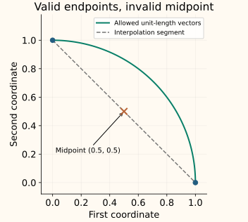

SMOTE
SMOTE creates feature vectors between nearby examples of a selected class. Instead of repeating a minority row exactly, it chooses a minority neighbor and moves some fraction of the way toward it. The generated row receives that same class label.
The central assumption is geometric: points along that segment should make useful examples of the class. We will inspect one segment at a time, then examine when that assumption can fail.
Separate the choice of parents from the interpolation
We describe basic SMOTE as implemented by imbalanced-learn. For a fixed neighborhood size, its generation step samples seed–neighbor pairs randomly. It does not allocate extra rows using a fitted classifier’s mistakes; ADASYN introduces a separate neighborhood-based allocation rule.
Write the equation after following one move
Let the seed be $x_i=(1,1)$ and its chosen neighbor be $x_j=(3,2)$. The displacement toward the neighbor is $x_j-x_i=(2,1)$. Moving one quarter of that displacement gives $(1,1)+0.25(2,1)=(1.5,1.25)$.
Writing the movement fraction as $\lambda$, the general interpolation is
Use one fraction for the whole vector. Choosing a different fraction independently for each coordinate generally produces a point inside a box, not on the selected segment. At 0 the result is the seed; at 1 it is the neighbor.
A = (1, 1), B = (3, 2), C = (2, 5). With k = 2, either other minority point is an eligible neighbor.
The distance calculation is a modeling choice
The neighbor search uses the class being expanded, not the whole dataset. A majority point can lie near or even on a selected segment without being used as a parent. Basic SMOTE does not check that the segment stays away from the other class.
Feature units affect which points are nearest. Fit a suitable scaling policy on the training data before the neighbor search. Also consider whether distance in this feature representation has useful meaning; scaling alone cannot establish that.
With $n_c$ rows in a class, an integer neighborhood size must satisfy $k<n_c$ to exclude the seed itself. The default k = 5 therefore needs at least six rows in that class in each training fold. Our three-point example deliberately uses k = 2. Duplicate coordinates can still give zero-length segments and repeated synthetic values.
Check whether the segment contains valid examples
Suppose two features encode a vector that must have length 1. The endpoints (1, 0) and (0, 1) are valid. Their midpoint (0.5, 0.5) has squared length 0.5, so it violates that constraint.

Other examples include categorical codes, integer counts and coupled physical measurements. Interpolating one-hot category vectors can produce fractions that do not represent a category. For mixed numeric and categorical data, consider SMOTENC; for entirely categorical data, SMOTEN uses a different generation procedure.
Large neighborhoods can connect distinct minority groups through a majority region. Sparse minority data or mislabeled seeds can also generate misleading points. Inspect representative parent pairs and generated examples, and compare with exact oversampling, weighting and no resampling. More synthetic rows do not provide more independent labels.
Python: keep the original rows and add three synthetic rows
Combine the three minority points with six majority points. A final target of six minority rows means generating three, not six. Use floating-point features to represent fractional coordinates.
Run basic SMOTE on the small feature dataset
import numpy as np
from imblearn.over_sampling import SMOTE
minority = np.array([[1., 1.], [3., 2.], [2., 5.]])
majority = np.array([[-2., -1.], [-1., 0.], [0., -1.],
[4., 0.], [4., 5.], [5., 4.]])
X = np.vstack([majority, minority])
y = np.array([0] * 6 + [1] * 3)
sampler = SMOTE(sampling_strategy={1: 6}, k_neighbors=2, random_state=7)
X_resampled, y_resampled = sampler.fit_resample(X, y)
print(np.bincount(y_resampled).tolist())
print(X_resampled[len(X):].round(4).tolist())
[6, 6]
[[2.9782, 2.0653], [1.4556, 2.8223], [2.692, 2.924]]The new rows lie on minority-neighbor segments. They have no single original source identity. If synthetic-row auditing matters, retain the seed, neighbor, fraction and preprocessing version in a generation implementation that exposes that provenance.
Fit the geometry and sampler inside training
Split original observations first. Inside each training fold, fit any imputation and scaling, apply SMOTE, then fit the classifier. Evaluate the fitted pipeline on original validation observations. Never generate synthetic neighbors using validation or test rows.
Construct the scaled training pipeline
from imblearn.pipeline import make_pipeline
from sklearn.preprocessing import StandardScaler
from sklearn.linear_model import LogisticRegression
model = make_pipeline(
StandardScaler(),
SMOTE(k_neighbors=2, random_state=7),
LogisticRegression(),
).fit(X, y)
This pipeline learns a different neighbor geometry from the unscaled example. Choose the scaling, k and sampling target through validation, checking the minority count in each fold. The sampler is bypassed during prediction; it does not alter the validation population.
C++: generate points from minority neighbor segments
This two-dimensional example builds each seed’s k nearest minority neighbors, then draws a seed, neighbor and shared fraction. It returns only the new points; the caller retains original rows and assigns the generated rows the minority label. Equal distances are ordered by input index.
Compile the neighbor-and-interpolation sampler
#include <algorithm>
#include <array>
#include <cmath>
#include <iostream>
#include <random>
#include <stdexcept>
#include <utility>
#include <vector>
using Point=std::array<double,2>;
Point interpolate(Point a, Point b, double fraction) {
if (!(fraction>=0 && fraction<=1)) throw std::invalid_argument("fraction");
Point result{};
for (std::size_t d=0;d<2;++d) {
if (!std::isfinite(a[d]) || !std::isfinite(b[d]))
throw std::invalid_argument("finite coordinates required");
result[d]=(1-fraction)*a[d]+fraction*b[d];
}
return result;
}
std::vector<Point> smote(const std::vector<Point>& minority,
std::size_t k, std::size_t count, unsigned seed) {
if (k==0 || k>=minority.size()) throw std::invalid_argument("need 1 <= k < class size");
std::vector<std::vector<std::size_t>> neighbors(minority.size());
for (std::size_t i=0;i<minority.size();++i) {
std::vector<std::pair<double,std::size_t>> distances;
for (std::size_t j=0;j<minority.size();++j) if (i!=j) {
double d=std::hypot(minority[i][0]-minority[j][0],
minority[i][1]-minority[j][1]);
if (!std::isfinite(d)) throw std::invalid_argument("invalid distance");
distances.push_back({d,j});
}
std::sort(distances.begin(),distances.end());
for (std::size_t j=0;j<k;++j) neighbors[i].push_back(distances[j].second);
}
std::mt19937 rng(seed);
std::uniform_int_distribution<std::size_t> pick_seed(0,minority.size()-1),pick_neighbor(0,k-1);
std::uniform_real_distribution<double> fraction(0,1);
std::vector<Point> result;
for (std::size_t n=0;n<count;++n) {
const auto i=pick_seed(rng),j=neighbors[i][pick_neighbor(rng)];
result.push_back(interpolate(minority[i],minority[j],fraction(rng)));
}
return result;
}
int main() {
const auto point=interpolate({1,1},{3,2},.25);
const auto generated=smote({{1,1},{3,2},{2,5}},2,3,7);
std::cout << point[0] << " " << point[1] << "\n"
<< "generated=" << generated.size() << "\n";
}
1.5 1.25
generated=3The seeded C++ and Python generators need not emit identical coordinates: their random-number routines and draw order differ. Both should obey the same parent-neighborhood and segment constraints. Use independent evaluation to decide whether those generated points help the task.
References and further reading
- Chawla et al.: SMOTE—Synthetic Minority Over-sampling Technique — the original feature-space interpolation method, Section 4.2.
- Imbalanced-learn: sample generation — shared-fraction interpolation and differences among synthetic samplers.
- Imbalanced-learn: SMOTE — target counts, neighborhood configuration and fitted sampler state.
- Imbalanced-learn: synthetic oversampling and categorical variants — feature-type limitations and SMOTENC/SMOTEN alternatives.
- Imbalanced-learn: leakage from resampling — why neighbor generation must remain inside training.